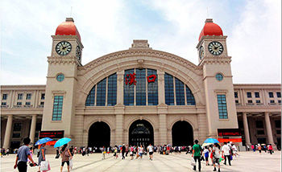

汉口火车站→长江职业学院

南校区
地铁：
轨道交通二号线→长职南校区
起点:汉口火车站
步行256米至地铁二号线汉口火车站（F口）
从汉口火车站（F口进）至光谷广场站（17站）下车（C口出） 末班车22：30
南行600米即到。
公交：
411路→715路→长职南校区
起点：汉口火车站
步行313米至汉口火车站公交站
乘坐411路（或79路/509路），至青年路机场河站（4站）末班车 20:30
换乘715路，至雄楚大道民族大道口站（18站）末班车 22:00
下车即到。
东校区
地铁：
轨道交通二号线→788路→长职东校区
起点：汉口火车站
步行256米至地铁二号线汉口火车站（F口）
从汉口火车站（F口进）至光谷广场站（17站）下车（C口出） 末班车22：30
步行430米至民族大道光谷广场站公交站
乘坐788路公交，至光谷一路流芳园路（12站 ）下车 末班车 21:25
步行809米即到。
公交：
411路→715路→788路→长职东校区
起点：汉口火车站
步行313米至汉口火车站公交站
乘坐411路（或79路/509路），至青年路机场河站（4站）末班车 20:30
换乘715，至雄楚大道下钱村站（19站）末班车 22:00
换乘788，至光谷一路流芳园路（11站）末班车 21：25
步行809米即到。
西校区
地铁：
轨道交通二号线→777路→长职西校区
起点：汉口火车站
步行256米至地铁二号线汉口火车站（F口）
从汉口火车站（F口进）至至螃蟹岬（8站）下车（D1出口）末班车 22:30
步行314米至友谊大道沙湖公交站
换乘777路公交，至南湖大道张吴湾（20站）下车 末班车 21:00
步行1.1公里即到。
公交：
汉口火车站→561路→570路→长职西校区
起点：汉口火车站
步行186米至汉口火车站公交站
乘坐561路公交，至恒安路富安街（25站）下车 末班车 21:30
换乘570路公交，至南湖大道张吴湾（8站）下车 末班车 20:00
步行1.1公里即到。